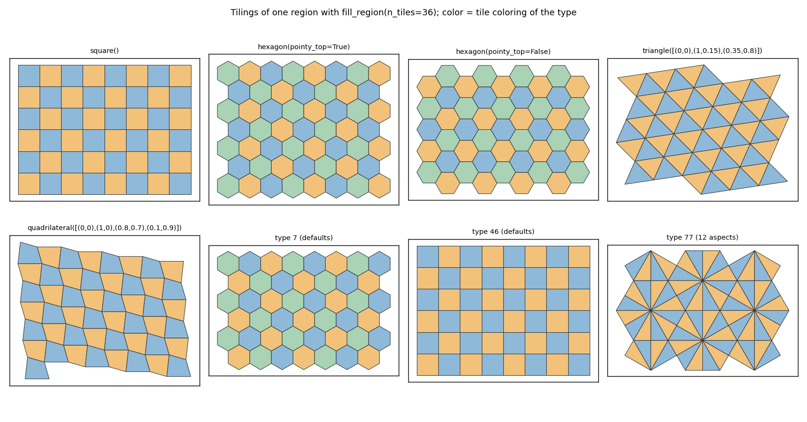
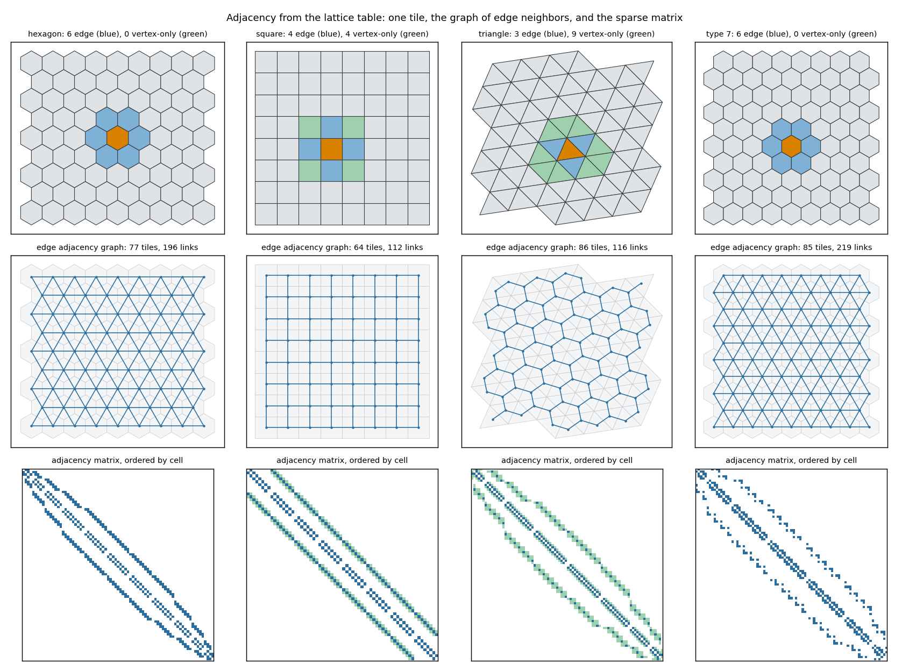
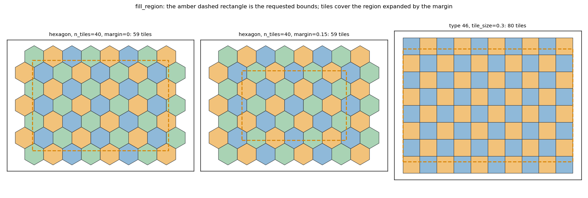
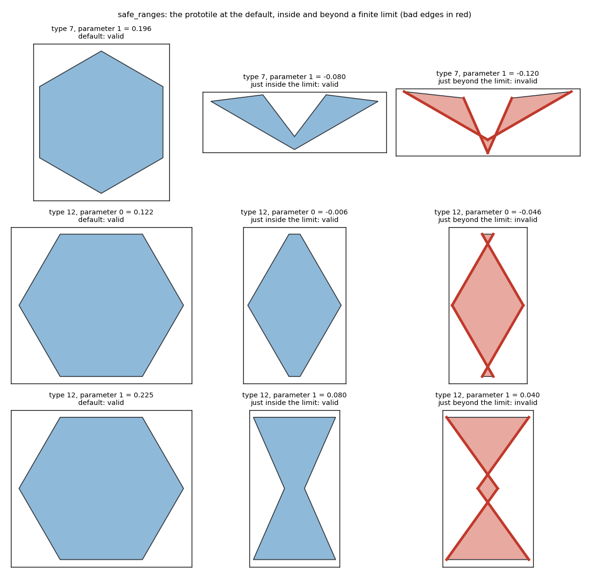

Phase 1 of the standalone isohedral tiling library turns the prototype into the package isotile (src layout, hatchling, version 0.1.0.dev0) with the final names (cell, aspect, translation_u, translation_v), find_types, info and describe, check_prototile, safe parameter ranges, fill_region, named constructors for square, hexagon, triangle and quadrilateral tilings, a public frame, a deterministic data build with a --check mode, an exact cover test, 2,835 local tests and a twelve-job CI that is green.
fig.py <output dir> draws the figures from an installed isotile (run with uv run --project <carto-flow> --with <isotile checkout> python fig.py .). They were made at commit cef8334; the later cover change does not alter them.
src/isotile/, hatchling, py.typed, version 0.1.0.dev0, requires-python >=3.10,<4.0, runtime dependencies numpy>=1.26 and scipy>=1.11, extras shapely, plot (empty) and all, dependency groups dev and tactile (installed together by default; the CI matrix leaves tactile out). LICENSE (MIT), NOTICE (Kaplan's BSD 3-Clause text), data/LICENSE-tactile and data/types.npz are in the wheel and the sdist. Ruff with carto-flow's rule set (line length 120), mypy --strict on src/ without exclusions, pre-commit hooks as in carto-flow.translation_u, translation_v, translations (2, 2); TileSet.cell (n, 2) and TileSet.aspect (n,); table columns d_cell_u, d_cell_v, neighbor_aspect; tiles(cell, aspect). tactile's names remain in _build_data.py and the tactile tests only.TilingType with safe_ranges (n_params, 2), n_edge_shapes, edge_shapes (per edge), shape_types (per shape id), has_reflections, info(), describe(); find_types with carto-flow's filters computed from the arrays; info() keys as carto-flow's type_info, affected_vertices exact from vertex_coeffs[:, :, i].check_prototile(tiling_type, parameters) -> PrototileReport(valid, bad_edges, message) checks zero-length edges, crossing or touching non-adjacent edges, folded neighboring edges and zero area on the straight prototile, without constructing a tiling. The constructor and the parameter setter raise ValueError for an invalid prototile and keep the previous state.IsohedralTiling(type, parameters=None, *, frame=None); properties vertices, aspects, translations, translation_u, translation_v, edge_transforms, edge_reversed, edge_shape_ids, edge_shapes, area, centroid, frame; prototile(normalized), inscribed_radius, fill, cover, tiles(cell, aspect), fill_region(bounds, *, n_tiles=None, tile_size=None, margin=0.0), with_frame, rotated, scaled, info, describe (both describe the instance: current parameter_values and a value in each parameter entry, with the type's defaults kept under default_parameters and default). Classmethods square() (type 76), hexagon(pointy_top=True) (type 20; pointy_top=False is flat-top), triangle(vertices=None) (type 84, any triangle, default equilateral), quadrilateral(vertices=None) (type 46, any simple quadrilateral, default unit square; self-intersecting ones raise ValueError). cover(bounds) includes a tile iff its straight polygon overlaps the region with an area above 1e-9 times the tile area; touching at a point or along an edge does not count. A strict bounding-box prefilter is followed by an exact vectorized test (Sutherland-Hodgman clipping against the four sides, then the area), valid for any simple polygon, without shapely. A region with non-positive width or height, or non-finite bounds, raises ValueError. TileSet: cell, aspect, transforms, vertices(), centroids, colors(), adjacency(kind) ("edge", "vertex", "vertex-only", scipy csr_array of bool), neighbors(i, kind), polygons() (shapely extra).margin times width and height on every side. Exactly one of n_tiles (tile size sqrt(region area / n_tiles)) and tile_size (square root of the tile area) is given. The tile area is the area of the straight prototile. The orientation (linear part) of the tiling's frame is kept and scaled; its scale and position are replaced, and the native origin goes to the centre of the region. The result is cover of the region. The count is at least n_tiles, because the tiles cover the region.python -m isotile._build_data writes types.npz deterministically (sorted keys, fixed dtypes, uncompressed, fixed time stamps); --check rebuilds and fails on any difference in dtype, shape or value. The adjacency tables are identical to the prototype's. The file is 390 KB (173 KB compressed)..github/workflows/main.yml): lint; typecheck; tests with coverage on Python 3.10 to 3.13 (Linux) and 3.12 (macOS, Windows) without tactile; tactile equivalence job; _build_data --check; lowest direct versions; wheel smoke test (build wheel and sdist, wheel from the sdist, data files compared with the source tree, clean venv, tiles for all 81 types). No publish workflow.| Check | Result |
|---|---|
| Local, Python 3.10, tactile installed, at 3ca20ff | 2,835 passed, 78 skipped |
| CI, no tactile | Linux 3.12 2,097 passed and 80 skipped, macOS the same; Windows 2,096 and 81 |
| CI, tactile job | 738 passed |
| CI, lowest direct versions | 2,096 passed, 81 skipped (an earlier run failed on scipy 1.11 int64 indices in connected_components; fixed) |
| find_types against carto-flow | 30 filter combinations |
| info and describe against carto-flow | 9 types |
| check_prototile and constructor | consistent for all 55 parametric types (known-bad parameters found for every one: random search, and the exact roots for triangles) |
| safe_ranges | defaults, ends and interiors valid; no invalid critical value or random value inside any range; a critical value lies within 1e-6 beyond each finite end; every infinite end valid at plus and minus 10, 100 and 1000 |
| cover | equals a shapely intersection(...).area > 1e-9 * tile area reference on random types and regions; touching-only cases excluded (square at (0, 0, 1, 1) gives 1 tile, (0, 0, 2, 2) gives 4); degenerate region raises |
| fill_region | 20 random types and regions: tiles cover the region (parts inside the region add up to its area, sampled points covered), count and size semantics, margin, frame handling; named constructors cover too |
| Constructors | 25 random triangles and 25 random simple quadrilaterals: prototile equals the polygon, lattice adjacency equals geometric adjacency |
| Results independent of ordering | identical digest under three PYTHONHASHSEED values; set order of edge_types irrelevant |
benchmarks/bench.py (tiles of one type in the unit square, best of 3, geometric adjacency best of 2). Library only; carto-flow is not compared in this PR.
| Type | Tiles | Generation | Vertex arrays | Lattice adjacency | Geometric adjacency | Lattice faster by |
|---|---|---|---|---|---|---|
| IH7 | 1,068 | 0.0058 s | 0.0008 s | 0.0016 s | 0.0115 s | 7.0x |
| IH7 | 10,300 | 0.0386 s | 0.0077 s | 0.0059 s | 0.0820 s | 14.0x |
| IH46 | 1,024 | 0.0044 s | 0.0005 s | 0.0014 s | 0.0096 s | 7.1x |
| IH46 | 10,151 | 0.0223 s | 0.0051 s | 0.0041 s | 0.0620 s | 15.2x |
| IH84 | 1,118 | 0.0040 s | 0.0006 s | 0.0012 s | 0.0070 s | 6.0x |
| IH84 | 10,108 | 0.0195 s | 0.0038 s | 0.0035 s | 0.0683 s | 19.6x |
The lattice and geometric results agree (the script raises otherwise). The timings are comparable to the design page's (lattice 0.0009 to 0.0055 s, geometric 0.0087 to 0.0734 s). The geometric method here is the library's vectorized one, not carto-flow's.
dev.fill is only fully exercised by the tactile tests.safe_ranges from exact roots instead of a scan (a 0.01 scan missed isolated degenerate values, for example IH41 parameter 0 at -0.02564); unbounded intervals are stored as infinity (no cap). Some limits are isolated degenerate values beyond which the prototile is valid again; the interval is the contiguous one around the default. check_prototile reports some valid but extremely elongated prototiles as degenerate at about 1e6 from the default, because its tolerances are relative to the squared longest edge.fill_region is checked by summed parts and point sampling, not by one union overlay (GEOS gave a 0.0015 area deficit on macOS and Windows for the union; cause not confirmed).fill is tactile-equivalent and does not guarantee coverage of the rectangle; cover and fill_region do.cover is the exact positive-overlap test described above (decided after review: the first exact version counted touching tiles, which added a ring of 404 tiles for the square tiling in the unit square). On the aligned region (0, 0, 1, 1) the counts are: type 76 1,024 and 10,000 tiles at about 1,000 and 10,000; type 20 1,067 and 10,301; type 7 1,068 and 10,300; type 46 1,024 and 10,000 (the bounding-box rule counted 10,151: 151 tiles that touch the region edge up to rounding noise of about 1e-17); type 84 1,118 and 10,108.inscribed_radius is exact for convex prototiles (linear program); non-convex ones use branch and bound to 1e-7 of the bounding-box size, capped at 200,000 squares. carto-flow's measure (centroid to boundary) is a different quantity and was not compared.TilingType.edge_shapes is per edge; the stored per-shape-id names are shape_types.
Seven families and types in one region with fill_region(n_tiles=36): square(), hexagon() pointy-top and flat-top, an irregular triangle and an irregular quadrilateral (constructors from polygons), type 7 and type 46 at their defaults, and type 77 (12 aspects). Colors are the tile coloring of the type.

Top: one tile (amber) with its edge neighbors (blue) and vertex-only neighbors (green) for the hexagon (6, 0), square (4, 4), irregular triangle (3, 9) and type 7 (6, 0). Middle: the graph of edge adjacency (links between tile centroids). Bottom: the sparse adjacency matrix with tiles ordered by cell, edge entries blue and vertex-only entries green.

fill_region for a hexagon tiling with n_tiles=40 without and with margin=0.15, and type 46 with tile_size=0.3; the amber dashed rectangle is the requested bounds. The tile count is the number of tiles that cover the expanded region (59, 59 and 80 tiles): n_tiles sets the tile size from the expanded area, so the margin enlarges the tiles and the count stays the same.

The prototile of type 7 (parameter 1) and type 12 (parameters 0 and 1) at the default, just inside a finite limit of safe_ranges and just beyond it. Beyond the limit the outline crosses itself and check_prototile returns the crossing edges (red).